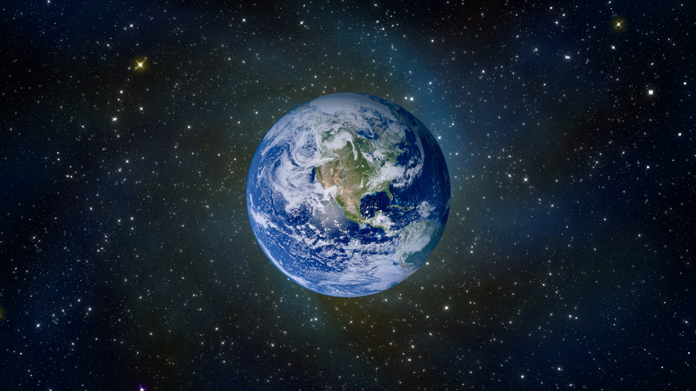
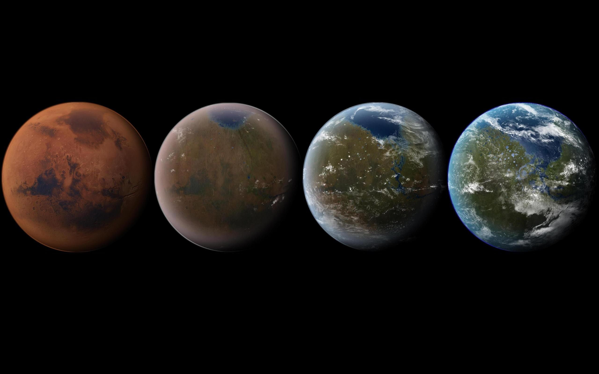
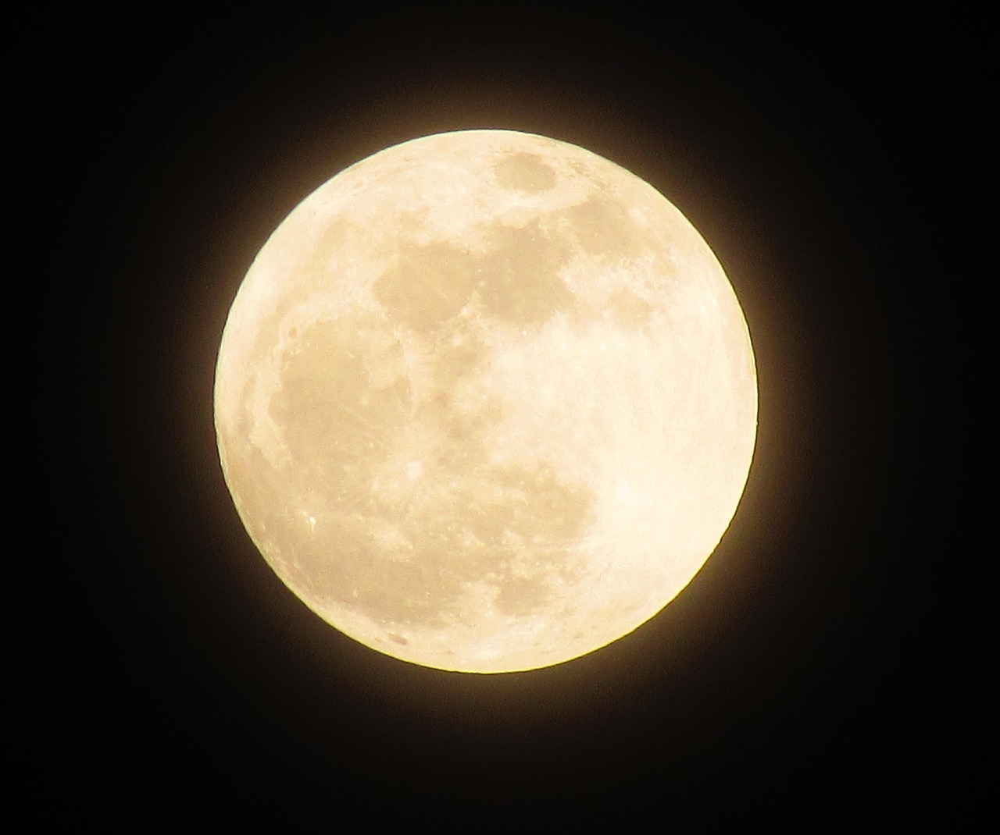

BackSpace
태양계
수성
금성
지구
화성
목성
토성
천왕성
해왕성
달
테라포밍
달 테라포밍
화성 테라포밍
금성 테라포밍
새소식
보도자료
NASA 영상
오늘의 뉴스
게시판
자유 게시판
질문 게시판
연구센터
제작자
News
"AI로 외계인 찾는다"···우주로 간 머신러닝
인공지능(AI) 기술이 지구 밖으로 지평을 넓힌다. 생명체 가능성이 있는 행성을 탐색하고 예측하는 데 AI 기술이 활용될 전망이다.
"32.7광년 떨어진 곳에서' 슈퍼 지구' 찾았다"
지구에서 32.7광년(1광년=10조㎞) 떨어진 곳에 슈퍼지구로 추측되는 적색왜성을 발견했다는 주장이 나와 학계의 관심이 쏠리고 있다.
Astronaut
우주 비행사가 궁금하진 않나요?
우주의 한발자국 내딛은 그들을 만나보세요.

SolarSystem
지구
우리가 살고 있는 푸른 행성이 바로 지구이다. 우주에서 봤을 때 푸른색의 바다, 녹색의 산과 갈색의 흙에 흰색의 구름이 조화를 이루고 있는 아름다운 행성이다.

Terraforming
화성 테라포밍
지구와 가까운 화성 테라 포밍 가능할까요?
Editor
경명호

MOON
지구의 달은 참 아름다워요.
오늘은 밤 하늘을 올려다 보는건 어때요?
SolarSystem
태양